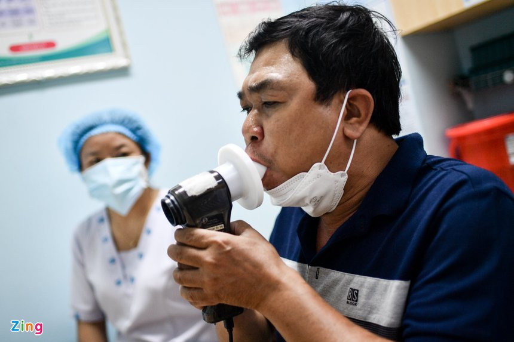

Là một trong những triệu chứng phổ biến nhất ở người nhiễm SARS-CoV-2, tình trạng ho quá nhiều và kéo dài cũng ảnh hưởng lớn đến sinh hoạt, sức khỏe và cần được xử trí phù hợp. Lý giải về triệu chứng ho ở người nhiễm SARS-CoV-2, bác sĩ Nguyễn Huy Hoàng, Trung tâm Oxy Cao áp Việt - Nga, Trung tâm Nhiệt đới Việt Nga, Bộ Quốc phòng, cho rằng về bản chất, đây là phản ứng để bảo vệ cơ thể. “Việc cơ thể ho sẽ khiến mầm bệnh bị tống xuất ra khỏi đường hô hấp. Tuy nhiên, nếu tình trạng ho quá nhiều hoặc kéo dài gây mệt mỏi, khó ngủ, chúng ta sẽ phải điều trị”, bác sĩ Hoàng nói. Theo vị chuyên gia này, người bệnh cần phân biệt rõ 2 loại ho gồm ho khan và ho có đờm bởi cách xử lý sẽ khác nhau. 